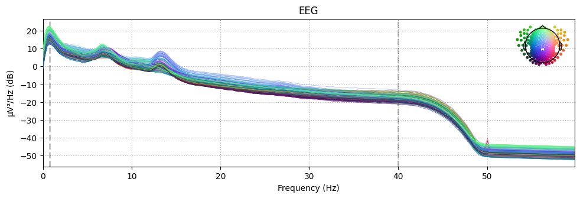
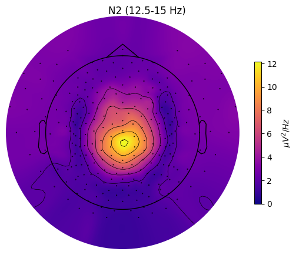

Spectral analyses#
Intoductory notes:#
This notebook presents spectral analyses functionality:
Power spectral density (PSD) per sleep stage
Spectrogram & hypnogram
Topomaps for the spectra per sleep stage
Spectral parametrization with FOOOF
Additional results such as sleep statistics.
Recommended watching and reading:
Import data#
Import module#
from sleepeeg.pipeline import SpectralPipe
Initialize SpectralPipe object#
spectral_pipe = SpectralPipe(
# can be any type of eeg file that MNE's read_raw() function supports.
path_to_eeg=r"C:\Users\Gennadiy\Documents\data\HZ4\processing\ICAPipe\after_ica_raw.fif",
# A directory you want the results to be saved in.
output_dir=r"C:\Users\Gennadiy\Documents\data\HZ4\processing",
# Point-per-row type of hypnogram.
path_to_hypno=r"C:\Users\Gennadiy\Documents\data\HZ4\staging.txt",
hypno_freq=1, # Hypnogram's sampling frequency (visbrain's hypnograms default to 1)
)
Opening raw data file C:\Users\Gennadiy\Documents\data\HZ4\processing\ICAPipe\after_ica_raw.fif...
Reading extended channel information
Read a total of 1 projection items:
Average EEG reference (1 x 257) idle
Range : 0 ... 2032249 = 0.000 ... 8128.996 secs
Ready.
Opening raw data file C:\Users\Gennadiy\Documents\data\HZ4\processing\ICAPipe\after_ica_raw-1.fif...
Reading extended channel information
Read a total of 1 projection items:
Average EEG reference (1 x 257) idle
Range : 2032250 ... 2229772 = 8129.000 ... 8919.088 secs
Ready.
Hypnogram is LONGER than data by 0.91 seconds. Cropping hypnogram to match data.size.
Compute PSD#
spectral_pipe.compute_psds_per_stage(
# A dict describing stages and their indices in the hypnogram file.
sleep_stages={"Wake": 0, "N1": 1, "N2": 2, "N3": 3, "REM": 4},
# Rereferencing to apply. Can be list of str channels or "average".
# If None, will not change the reference.
reference="average",
method="welch", # welch or multitaper
fmin=0, # Lower frequency bound.
fmax=60, # Upper frequency bound.
picks="eeg", # Channels to compute the PSD for.
reject_by_annotation=True, # Whether to reject epochs annotated as BAD.
save=True, # Whether to save the PSD hdf5 file for each sleep stage.
overwrite=True, # Whether to overwrite hdf5 files if there are any.
n_jobs=-1, # n_jobs, refer to the MNE documentation.
verbose=False, # verbose, refer to the MNE documentation.
# Additional arguments passed to the PSD computing method, i.e., welch or multitaper:
n_fft=1024,
n_per_seg=1024,
n_overlap=512,
window="hamming",
)
Reading 0 ... 2229772 = 0.000 ... 8919.088 secs...
EEG channel type selected for re-referencing
Applying average reference.
Applying a custom ('EEG',) reference.
Removing existing average EEG reference projection.
Setting 166506 of 2229773 (7.47%) samples to NaN, retaining 2063267 (92.53%) samples.
Setting 166506 of 2229773 (7.47%) samples to NaN, retaining 2063267 (92.53%) samples.
Setting 166506 of 2229773 (7.47%) samples to NaN, retaining 2063267 (92.53%) samples.
Setting 166506 of 2229773 (7.47%) samples to NaN, retaining 2063267 (92.53%) samples.
Setting 166506 of 2229773 (7.47%) samples to NaN, retaining 2063267 (92.53%) samples.
Overwriting existing file.
Overwriting existing file.
Overwriting existing file.
Overwriting existing file.
Overwriting existing file.
spectral_pipe.psds["REM"].get_data()
array([[1.12159730e-11, 8.88548338e-11, 1.53996066e-10, ...,
1.97910058e-17, 1.96357593e-17, 1.95389615e-17],
[8.95263632e-12, 6.96787919e-11, 1.26118316e-10, ...,
1.70667787e-17, 1.69732521e-17, 1.68570002e-17],
[4.74297373e-12, 3.64199309e-11, 7.17809594e-11, ...,
1.24282278e-17, 1.23952461e-17, 1.22674078e-17],
...,
[2.25152861e-12, 1.52139004e-11, 3.22564837e-11, ...,
6.11832611e-18, 6.10261368e-18, 6.05313229e-18],
[1.00362474e-12, 6.70567094e-12, 1.50728174e-11, ...,
3.64050724e-18, 3.63955539e-18, 3.60047124e-18],
[1.29844979e-12, 8.61794204e-12, 2.32816383e-11, ...,
1.15482884e-17, 1.14933140e-17, 1.14591497e-17]])
spectral_pipe.psds["REM"].to_data_frame()
| freq | E1 | E2 | E3 | E4 | E5 | E6 | E7 | E8 | E9 | ... | E248 | E249 | E250 | E251 | E252 | E253 | E254 | E255 | E256 | VREF | |
|---|---|---|---|---|---|---|---|---|---|---|---|---|---|---|---|---|---|---|---|---|---|
| 0 | 0.000000 | 1.121597e-11 | 8.952636e-12 | 4.742974e-12 | 2.613491e-12 | 2.008518e-12 | 1.562010e-12 | 1.995116e-12 | 1.315939e-12 | 1.184958e-12 | ... | 1.727576e-11 | 6.234205e-12 | 2.781620e-12 | 2.307205e-12 | 2.135936e-11 | 6.511878e-12 | 4.388799e-12 | 2.251529e-12 | 1.003625e-12 | 1.298450e-12 |
| 1 | 0.244141 | 8.885483e-11 | 6.967879e-11 | 3.641993e-11 | 1.922142e-11 | 1.319050e-11 | 9.781429e-12 | 1.083401e-11 | 8.437810e-12 | 7.610523e-12 | ... | 1.324171e-10 | 4.660476e-11 | 2.000808e-11 | 1.627743e-11 | 1.661195e-10 | 5.033913e-11 | 3.280497e-11 | 1.521390e-11 | 6.705671e-12 | 8.617942e-12 |
| 2 | 0.488281 | 1.539961e-10 | 1.261183e-10 | 7.178096e-11 | 4.325162e-11 | 3.175512e-11 | 2.504017e-11 | 2.445339e-11 | 2.380763e-11 | 2.097851e-11 | ... | 2.361249e-10 | 8.893730e-11 | 4.127710e-11 | 3.209698e-11 | 2.915069e-10 | 9.176334e-11 | 6.292463e-11 | 3.225648e-11 | 1.507282e-11 | 2.328164e-11 |
| 3 | 0.732422 | 1.145198e-10 | 9.871478e-11 | 6.138161e-11 | 4.324239e-11 | 3.527048e-11 | 3.017164e-11 | 2.880080e-11 | 2.937096e-11 | 2.520557e-11 | ... | 1.804473e-10 | 7.246223e-11 | 3.748320e-11 | 3.078287e-11 | 2.166930e-10 | 7.234395e-11 | 5.348703e-11 | 3.088915e-11 | 1.601057e-11 | 2.734367e-11 |
| 4 | 0.976562 | 5.548802e-11 | 4.927615e-11 | 3.428111e-11 | 2.769119e-11 | 2.466745e-11 | 2.216278e-11 | 2.158627e-11 | 2.236670e-11 | 1.858579e-11 | ... | 8.874072e-11 | 3.943897e-11 | 2.305046e-11 | 2.039744e-11 | 1.023825e-10 | 3.708444e-11 | 2.914256e-11 | 1.953945e-11 | 1.131309e-11 | 1.953022e-11 |
| ... | ... | ... | ... | ... | ... | ... | ... | ... | ... | ... | ... | ... | ... | ... | ... | ... | ... | ... | ... | ... | ... |
| 241 | 58.837891 | 2.006180e-17 | 1.730734e-17 | 1.261477e-17 | 1.077617e-17 | 1.091107e-17 | 1.103200e-17 | 1.220493e-17 | 1.340761e-17 | 1.110146e-17 | ... | 2.813737e-17 | 1.275212e-17 | 7.114322e-18 | 6.517549e-18 | 3.443748e-17 | 1.208406e-17 | 9.529407e-18 | 6.218680e-18 | 3.705924e-18 | 1.174528e-17 |
| 242 | 59.082031 | 1.992085e-17 | 1.720258e-17 | 1.253555e-17 | 1.069510e-17 | 1.084838e-17 | 1.095341e-17 | 1.211129e-17 | 1.329624e-17 | 1.102343e-17 | ... | 2.791946e-17 | 1.265862e-17 | 7.059553e-18 | 6.446900e-18 | 3.418440e-17 | 1.199117e-17 | 9.463812e-18 | 6.169224e-18 | 3.677376e-18 | 1.167512e-17 |
| 243 | 59.326172 | 1.979101e-17 | 1.706678e-17 | 1.242823e-17 | 1.062788e-17 | 1.076098e-17 | 1.087883e-17 | 1.203981e-17 | 1.320389e-17 | 1.093467e-17 | ... | 2.774638e-17 | 1.254757e-17 | 6.991918e-18 | 6.399232e-18 | 3.396470e-17 | 1.191604e-17 | 9.384787e-18 | 6.118326e-18 | 3.640507e-18 | 1.154829e-17 |
| 244 | 59.570312 | 1.963576e-17 | 1.697325e-17 | 1.239525e-17 | 1.055727e-17 | 1.068349e-17 | 1.080614e-17 | 1.193250e-17 | 1.310125e-17 | 1.085106e-17 | ... | 2.757270e-17 | 1.250065e-17 | 6.994621e-18 | 6.390680e-18 | 3.374556e-17 | 1.183655e-17 | 9.351536e-18 | 6.102614e-18 | 3.639555e-18 | 1.149331e-17 |
| 245 | 59.814453 | 1.953896e-17 | 1.685700e-17 | 1.226741e-17 | 1.048299e-17 | 1.062074e-17 | 1.071132e-17 | 1.187606e-17 | 1.303468e-17 | 1.080335e-17 | ... | 2.743555e-17 | 1.243105e-17 | 6.923300e-18 | 6.340613e-18 | 3.355516e-17 | 1.176781e-17 | 9.272235e-18 | 6.053132e-18 | 3.600471e-18 | 1.145915e-17 |
246 rows × 258 columns
Visualize#
PSD#
spectral_pipe.plot_psds(
picks=["E101"],
psd_range=(-20, 30), # Y axis limits
freq_range=(0, 40), # X axis limits
dB=True,
xscale="linear", # Matplotlib xscale. Can be {"linear", "log", "symlog", "logit", ...} or ScaleBase
axis=None,
plot_sensors=True, # Whether to plot EEG sensors showing which channels were used to compute PSD.
save=True, # Whether to save the plot as a png file.
)

_ = spectral_pipe.psds["N2"].plot(picks="data", exclude="bads", show=False)

Hypnogram & spectrogram#
spectral_pipe.plot_hypnospectrogram(
picks=["E101"], # Channel[s] to compute the spectrogram on.
win_sec=10, # The length of the sliding window, in seconds, used for multitaper PSD computation.
freq_range=(0, 40), # Y axis limits
cmap="Spectral_r", # Matplotlib colormap as in https://matplotlib.org/stable/tutorials/colors/colormaps.html
overlap=True, # Whether to plot hypnogram over spectrogram (True) or on top of it (False)
save=True, # Whether to save the plot as a file.
)
Setting 289559 of 5985608 (4.84%) samples to NaN, retaining 5696049 (95.16%) samples.
Topomap#
Plots a topomap for a single sleep stage and frequency band
spectral_pipe.plot_topomap(
stage="N2", # Stage to plot topomap for.
band={"SMR": (12.5, 15)}, # Band to plot topomap for.
# Should contain at least index of the provided "stage".
dB=False, # Whether to transform PSD to dB/Hz
axis=None, # Whether to plot on provided matplotlib axis.
save=True, # Whether to save the plot as a file.
topomap_args=dict(cmap="plasma"), # Arguments passed to mne.viz.plot_topomap().
cbar_args=None, # Arguments passed to plt.colorbar().
)

Topomap collage#
Plot topomaps for multiple bands and sleep stages
spectral_pipe.plot_topomap_collage(
# Bands to plot topomaps for.
bands = {'Delta': (0, 3.99), 'Theta': (4, 7.99),
'Alpha': (8, 12.49), 'SMR': (12.5, 15),
'Beta': (12.5, 29.99), 'Gamma': (30, 60)},
# Tuple of strs or "all", e.g., ("N1", "REM") or "all" (plots all "sleep_stages").
stages_to_plot="all",
dB=False, # Whether to transform PSD to dB/Hz.
low_percentile=5, # Set min color value by percentile of the band data.
high_percentile=95, # Set max color value by percentile of the band data.
fig=None, # Instance of plt.Figure, a new fig will be created if None.
save=True, # Whether to save the plot as a file.
topomap_args=dict(cmap='plasma'), # Arguments passed to mne.viz.plot_topomap().
cbar_args=None, # Arguments passed to plt.colorbar().
)

Parametrize spectrum#
spectral_pipe.parametrize(
picks=['eeg'], # Channels to use.
freq_range=[0.5,60], # Range of frequencies to parametrize.
# Whether to average psds over channels.
# If False or multiple channels are provided, the FOOOFGroup will be used.
# Defaults to False.
average_ch=False
)
c:\Users\Gennadiy\Documents\eeg-processing-pipeline\sleepeeg\pipeline.py:375: DeprecationWarning:
The `fooof` package is being deprecated and replaced by the `specparam` (spectral parameterization) package.
This version of `fooof` (1.1) is fully functional, but will not be further updated.
New projects are recommended to update to using `specparam` (see Changelog for details).
from fooof import FOOOFGroup
Running FOOOFGroup across 257 power spectra.
Running FOOOFGroup across 257 power spectra.
Running FOOOFGroup across 257 power spectra.
Running FOOOFGroup across 257 power spectra.
Running FOOOFGroup across 257 power spectra.
spectral_pipe.fooofs['N2'].report()
Running FOOOFGroup across 257 power spectra.
==================================================================================================
FOOOF - GROUP RESULTS
Number of power spectra in the Group: 257
The model was run on the frequency range 0 - 60 Hz
Frequency Resolution is 0.24 Hz
Power spectra were fit without a knee.
Aperiodic Fit Values:
Exponents - Min: 1.940, Max: 2.663, Mean: 2.392
In total 704 peaks were extracted from the group
Goodness of fit metrics:
R2s - Min: 0.960, Max: 0.997, Mean: 0.976
Errors - Min: 0.029, Max: 0.120, Mean: 0.078
==================================================================================================
Sleep Stats#
spectral_pipe.sleep_stats(save=False)
{'TIB': 399.03333333333336,
'SPT': 376.5,
'WASO': 1.0,
'TST': 375.5,
'N1': 6.0,
'N2': 109.5,
'N3': 191.0,
'REM': 69.0,
'NREM': 306.5,
'SOL': 22.0,
'Lat_N1': 22.0,
'Lat_N2': 27.5,
'Lat_N3': 41.0,
'Lat_REM': 183.0,
'%N1': 1.5978695073235685,
'%N2': 29.161118508655125,
'%N3': 50.865512649800266,
'%REM': 18.37549933422104,
'%NREM': 81.62450066577897,
'SE': 94.10241416757162,
'SME': 99.734395750332}